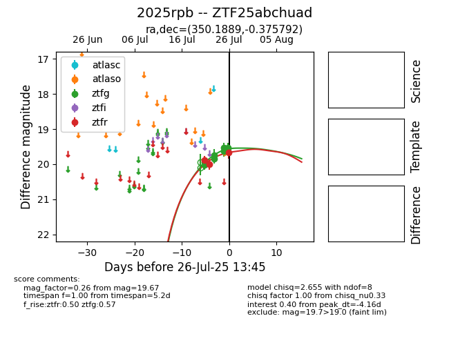

Target 2025rpb at 2025-07-26 13:45, see:
FINK: fink-portal.org/2025rpb
Lasair: lasair-ztf.lsst.ac.uk/objects/2025rpb
ALeRCE: alerce.online/object/2025rpb
TNS: wis-tns.org/object/2025rpb
YSE: ziggy.ucolick.org/yse/transient_detail/2025rpb
alt names
ZTF25abchuad (ztf,fink)
2025rpb (tns,yse)
coordinates:
equatorial (ra, dec) = (350.1889,-0.37579)
galactic (l, b) = (80.0416,-55.50716)
photometry
last ztfg=19.55, ztfr=19.67
8 ztfg, 3 ztfr detections
